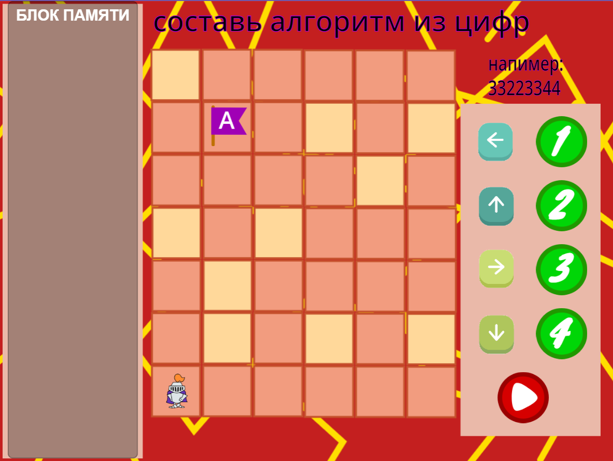
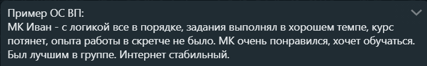

Ссылка на шаблон таблицы
Таблица представлена в ознакомительных целях. Чтобы использовать ее на занятиях нужно скопировать ее на свой диск или компьютер (подробнее читайте в разделе инструкций)
Мастер класс
Активность "Помоги Рыцарю" для мастер-класса
Рекомендуется проводить после этапа знакомства, чтобы познакомить ребят с главным героем игры и с понятием алгоритма.
Нужно помочь рыцарю пройти лабиринт и добраться до флага.
Управление осуществляется путем шифрования команд цифрами, записью и считыванием их из блока памяти (подходит также для обьяснения соответствующей темы)
ЖМИ на картинку внизу!

ОБРАТНАЯ СВЯЗЬ ПОСЛЕ МАСТЕР КЛАССА:
Моменты, которые нужно указать по каждому ребенку
ВП, ГД:
1. Уровень логики
2. В каком темпе выполнял задания
3. Тянет ли курс. Если не тянет, посоветовать другой курс
4. Был ли опыт программирования
5. Впечатление ребёнка от МК
6. Отметить лучшего ученика в группе
7. Были ли проблемы с интернетом

Ресурсный сайт по Основам логики и программирования
Ссылки на приложение Scratch Junior для ПК